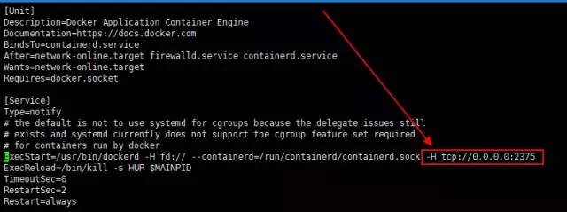

提升10倍生产力：IDEA远程一键部署SpringBoot到Docker
作者：陶章好
juejin.im/post/5d026212f265da1b8608828b
IDEA是Java开发利器，springboot是Java生态中最流行的微服务框架，docker是时下最火的容器技术，那么它们结合在一起会产生什么化学反应呢？
一、开发前准备
1.Docker安装
可以参考：
https://docs.docker.com/install/
2.配置docker远程连接端口
vi /usr/lib/systemd/system/docker.service
找到 ExecStart，在最后面添加 -H tcp://0.0.0.0:2375，如下图所示

3.重启docker
systemctl daemon-reload
systemctl start docker
4.开放端口
firewall-cmd --zone=public --add-port=2375/tcp --permanent
5.Idea安装插件，重启

6.连接远程docker
1、编辑配置

2、填远程docker地址

3、连接成功，会列出远程docker容器和镜像

二、新建项目
1.创建springboot项目
项目结构图

1、配置pom文件
<?xml version="1.0" encoding="UTF-8"?>
<project xmlns="http://maven.apache.org/POM/4.0.0"
xmlns:xsi="http://www.w3.org/2001/XMLSchema-instance"
xsi:schemaLocation="http://maven.apache.org/POM/4.0.0 http://maven.apache.org/xsd/maven-4.0.0.xsd">
<modelVersion>4.0.0</modelVersion>
<groupId>docker-demo</groupId>
<artifactId>com.demo</artifactId>
<version>1.0-SNAPSHOT</version>
<parent>
<groupId>org.springframework.boot</groupId>
<artifactId>spring-boot-starter-parent</artifactId>
<version>2.0.2.RELEASE</version>
<relativePath />
</parent>
<properties>
<project.build.sourceEncoding>UTF-8</project.build.sourceEncoding>
<project.reporting.outputEncoding>UTF-8</project.reporting.outputEncoding>
<docker.image.prefix>com.demo</docker.image.prefix>
<java.version>1.8</java.version>
</properties>
<build>
<plugins>
<plugin>
<groupId>org.springframework.boot</groupId>
<artifactId>spring-boot-maven-plugin</artifactId>
</plugin>
<plugin>
<groupId>com.spotify</groupId>
<artifactId>docker-maven-plugin</artifactId>
<version>1.0.0</version>
<configuration>
<dockerDirectory>src/main/docker</dockerDirectory>
<resources>
<resource>
<targetPath>/</targetPath>
<directory>${project.build.directory}</directory>
<include>${project.build.finalName}.jar</include>
</resource>
</resources>
</configuration>
</plugin>
<plugin>
<artifactId>maven-antrun-plugin</artifactId>
<executions>
<execution>
<phase>package</phase>
<configuration>
<tasks>
<copy todir="src/main/docker" file="target/${project.artifactId}-${project.version}.${project.packaging}"></copy>
</tasks>
</configuration>
<goals>
<goal>run</goal>
</goals>
</execution>
</executions>
</plugin>
</plugins>
</build>
<dependencies>
<dependency>
<groupId>org.springframework.boot</groupId>
<artifactId>spring-boot-starter-web</artifactId>
</dependency>
<dependency>
<groupId>org.springframework.boot</groupId>
<artifactId>spring-boot-starter-test</artifactId>
<scope>test</scope>
</dependency>
<dependency>
<groupId>log4j</groupId>
<artifactId>log4j</artifactId>
<version>1.2.17</version>
</dependency>
</dependencies>
</project>
2、在src/main目录下创建docker目录，并创建Dockerfile文件
FROM openjdk:8-jdk-alpine
ADD *.jar app.jar
ENTRYPOINT ["java","-Djava.security.egd=file:/dev/./urandom","-jar","/app.jar"]
3、在resource目录下创建application.properties文件
logging.config=classpath:logback.xml
logging.path=/home/developer/app/logs/
server.port=8990
4、创建DockerApplication文件
@SpringBootApplication
public class DockerApplication {
public static void main(String[] args) {
SpringApplication.run(DockerApplication.class, args);
}
}
5、创建DockerController文件
@RestController
public class DockerController {
static Log log = LogFactory.getLog(DockerController.class);
@RequestMapping("/")
public String index() {
log.info("Hello Docker!");
return "Hello Docker!";
}
}
6、增加配置


命令解释：
Image tag : 指定镜像名称和tag，镜像名称为 docker-demo，tag为1.1
Bind ports : 绑定宿主机端口到容器内部端口。格式为[宿主机端口]:[容器内部端口]
Bind mounts : 将宿主机目录挂到到容器内部目录中。
格式为[宿主机目录]:[容器内部目录]。这个springboot项目会将日志打印在容器 /home/developer/app/logs/ 目录下，将宿主机目录挂载到容器内部目录后，那么日志就会持久化容器外部的宿主机目录中。
7、Maven打包

8、运行


先pull基础镜像，然后再打包镜像，并将镜像部署到远程docker运行

这里我们可以看到镜像名称为docker-demo:1.1，docker容器为docker-server
9、运行成功

10、浏览器访问

11、日志查看

自此，通过IDEA 部署springboot项目到docker成功！难以想象，部署一个Javaweb项目竟然如此简单方便！
【推荐阅读】
[技术]：面试官问你MySQL的优化，看这篇文章就够了
[技术]：IntelliJ IDEA快捷键终极大全，速度收藏！